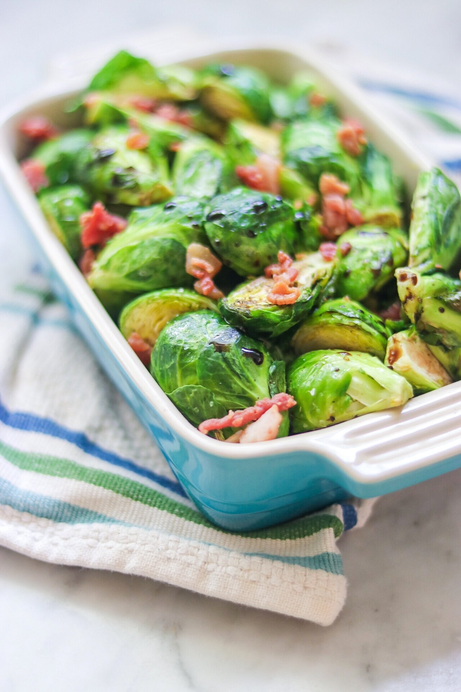

Brocolli Salad

Description
Sweet and tart balsamic vinegar pairs well with the bitterness of Brussels sprouts; the bacon adds a smokey flavor. After 10 minutes, there's still some bite to the sprouts; add a few more minutes for a softer texture, if desired..
- Olive oil
- Salt
- Ground black pepper
- Brusselsprouts
- Balsamic vinegar
- Crumbled cooked bacon (Optional)
Steps
- Preheat an air fryer to 350 degrees F (175 degrees C).
- Combine oil, salt, and pepper in a bowl and mix well. Add Brussels sprouts and turn to coat.
- Air fry for 5 minutes, shake the sprouts, and cook for an additional 5 minutes.
- Transfer sprouts to a serving dish and sprinkle with balsamic vinegar; turn to coat. Sprinkle with bacon.
Back